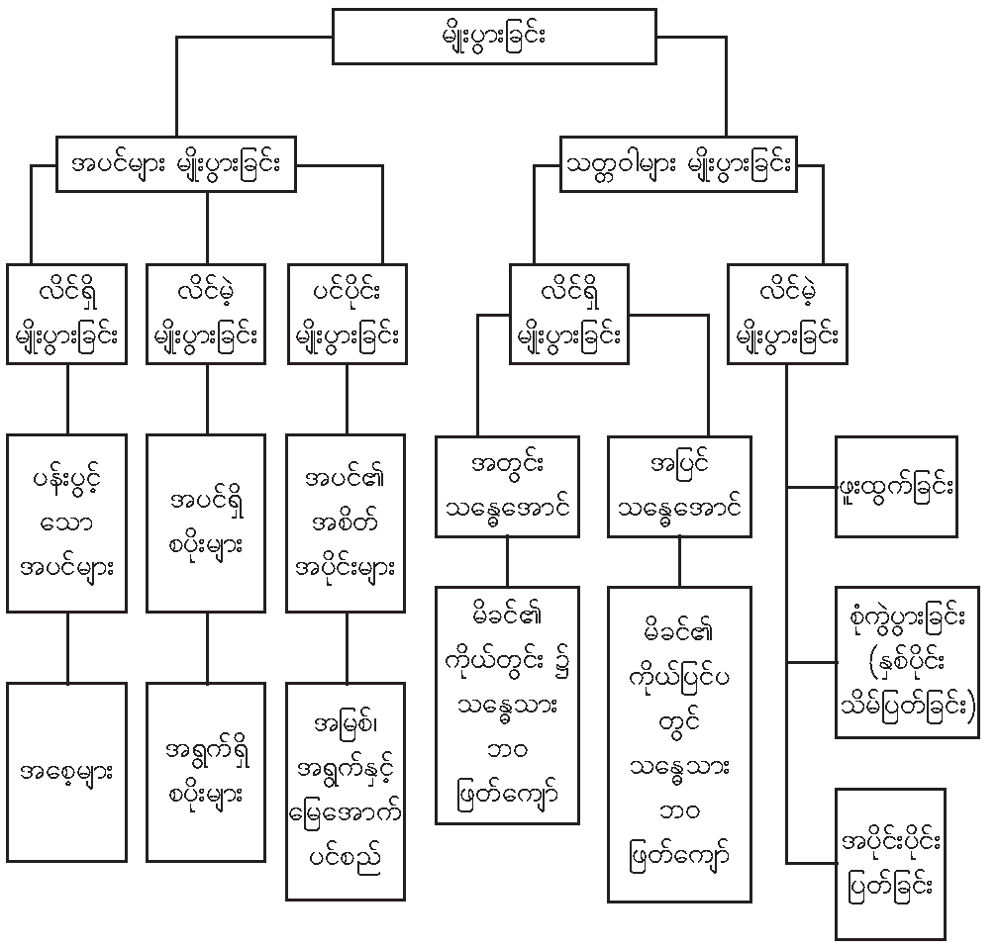

အခန်း (၆) သုံးသပ်ချက် မြေပုံ နှင့် ဂရပ်များ Concept Map & Graphs
ကျောင်းသုံးဖတ်စာအုပ် စာမျက်နှာ (၅၈) ရှိ အခန်း (၆) မျိုးပွားခြင်း ခြုံငုံသုံးသပ်ချက် မူရင်းမြေပုံဂရပ်နှင့် အပြန်အလှန်ဖြည့်စွက် ဇယားကွက်လပ်များကို လေ့ကျင့်စစ်ဆေးပါ။
အပြန်အလှန်ဖြည့်စွက်ရန် ဇယားကွက်
ဖြည့်စွက်ပြီးစီးမှု: 0 / 10
စကားလုံးဘဏ် — အောက်ပါစကားလုံးတစ်ခုကို နှိပ်၍ ရွေးပြီး မြေပုံရှိ ကိုက်ညီသော ကွက်လပ်တွင် ထည့်ပါ
မျိုးပွားခြင်း (Reproduction)
🌿 အပင်များ မျိုးပွားခြင်း
လိင်ရှိမျိုးပွားခြင်း
ပန်းပွင့်သော အပင်များ
အပင်ရှိ စပိုးများ
အပင်၏ အစိတ်အပိုင်းများ
🐾 သတ္တဝါများ မျိုးပွားခြင်း
လိင်ရှိမျိုးပွားခြင်း
မိခင်၏ ကိုယ်တွင်း၌ သန္ဓေသားဘဝ ဖြတ်ကျော်
မိခင်၏ ကိုယ်ပြင်ပတွင် သန္ဓေသားဘဝ ဖြတ်ကျော်
လိင်မဲ့မျိုးပွားခြင်း
စာမျက်နှာ ၅၈ · နှိုင်းယှဉ်ဂရပ်များ
ဖတ်စာအုပ် မူရင်းသုံးသပ်ချက် ဂရပ် နှင့် ခွဲခြမ်းစိတ်ဖြာမှု ဂရပ်
စာမျက်နှာ (၅၈) မူရင်း Concept Map ပုံနှင့် မျိုးပွားနည်းအချိုးအစား ဘားဂရပ်တို့ကို နှိုင်းယှဉ်လေ့လာပါ။

ဖတ်စာအုပ် စာမျက်နှာ (၅၈) မူရင်း Concept Map ဂရပ်